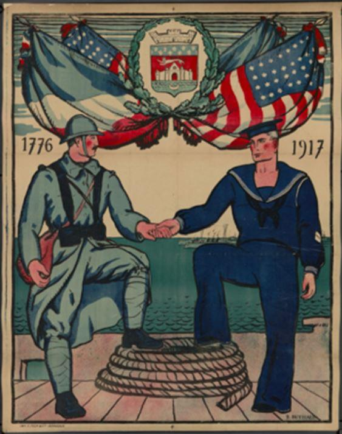
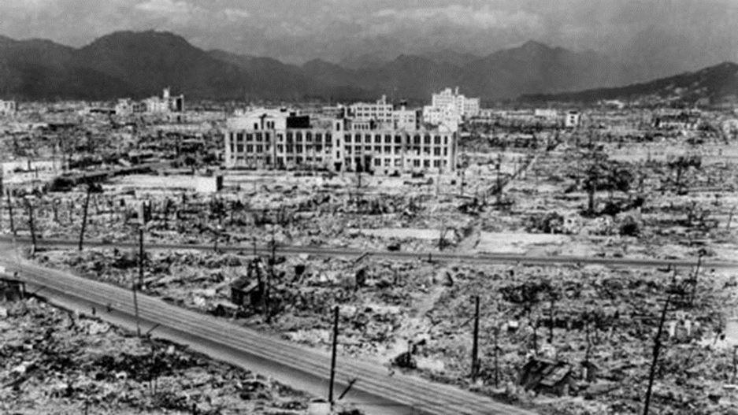

Depuis la déclaration d’indépendance de 1776, l’Amérique incarne, aux yeux de ses habitants comme à ceux du monde, la patrie de la liberté, de la démocratie et de la justice. Au XIXe siècle, les États-Unis se sont réellement constitués sur une croissance explosive de la population de l’Europe débordant sur l’Amérique.
L’Europe et les États-Unis se sont nourris et influencés mutuellement. La Première et la Seconde Guerre mondiale ont fini d’anéantir la suprématie européenne sur le monde et ainsi permis aux États-Unis de s’affirmer comme la puissance occidentale majeure. De la Seconde Guerre mondiale à la chute de l’Union soviétique, les États-Unis ont été indéniablement une source de stabilité pour l’Europe. Aujourd’hui, on peut légitimement s’inquiéter de leur récente évolution financière, médiatique, politique et militaire.
Les données géopolitiques
Les Américains, habitants des États-Unis d’Amérique, ont emprunté le nom de tout un continent dont ils n’occupent que la partie septentrionale. Le territoire des États-Unis est géographiquement une surface homogène ouverte sur deux océans, le Pacifique et l’Atlantique. L’exact pendant géographique des États-Unis dans l’hémisphère nord, c’est la plus grande Europe, de Brest à Vladivostok, flanquée à chaque extrémité des archipels britannique et japonais. Ce gigantesque continent eurasiatique rassemble l’essentiel de la population et des richesses mondiales.
Quant à nous, les Européens de l’ouest, nous peuplons, en son étroite péninsule occidentale, le Finistère du continent. Véritable Bretagne de l’Eurasie, la France est un condensé d’Europe, elle-même au Finistère de la péninsule. Seul pays participant à la fois de l’Europe du nord et de l’Europe méditerranéenne, jouissant des trois accès maritimes qui caractérisent la péninsule européenne, bénéficiant au nord, à l’ouest, et au sud de frontières naturelles, alors qu’à l’est se mêlent entre l’Allemagne et la France des pays et des régions bilingues issues de la Lotharingie du petit-fils de Charlemagne, dans lesquels les influences germaniques et françaises ont toujours conjointement constitué l’identité locale (Flandre française, Belgique, Luxembourg, Alsace-Lorraine, Suisse). L’océan constitue ainsi la limite occidentale de l’Europe, et à l’Est, au-delà de la « vieille Europe » de Donald Rumsfeld, mais toujours en Europe, très lentement et progressivement, l’Europe se mêle à l’Asie. L’Oural est une frontière pour les géographes, mais n’a jamais constitué une limite politique ou culturelle du point de vue des Russes.
Au Sud, en revanche, au-delà de la Méditerranée et à l’est d’Istanbul, la limite géographique et politique de l’Europe apparaît clairement et la transition culturelle se fait plus rapide, même si l’Espagne, le sud de l’Italie, et l’Europe balkanique naguère ottomane ont été durablement influencés par le monde arabo-musulman, devenu désormais le partenaire économique naturel des pays européens.
Les États-Unis sont un peuple de la mer, l’Europe continentale est marquée par son rapport à la terre. Les Etats-Unis, au gré des guerres civiles européennes du XXe siècle, ont progressivement pris la relève de la puissance maritime par excellence, l’Angleterre. La prépondérance du commerce et la subordination des autres activités humaines aux relations marchandes les caractérisent. Pour les pays du continent européen, la guerre était traditionnellement une activité menée d’État à État, d’armée à armée, les populations civiles restant en dehors des hostilités. La puissance maritime, au contraire, essaiera de toucher le commerce et l’économie du pays adverse, en pratiquant notamment le blocus qui n’épargne ni les femmes, ni les enfants, non plus qu’en général les populations civiles. Une pratique fréquente, aujourd’hui, aux États-Unis.
Les pays de l’Europe continentale, en tout premier lieu l’Allemagne et la France, ont développé une législation et une protection sociale très avancées qui semblent rétrogrades aux libéraux anglo-saxons. Le néo-libéralisme semble, quant à lui, inapplicable tel quel par la plupart des pays de l’Europe continentale, fidèles à leur tradition humaniste. Vladimir Poutine, par exemple, cite souvent le modèle de l’économie sociale de marché du chancelier Erhard. Le mercantilisme, les théories monétaires et une des toutes premières banques centrales sont nés en Grande-Bretagne.
Après la révolution anglaise de 1688- 1689, John Locke participa à la réforme du système monétaire et en 1694 à la création de la banque d’Angleterre, constituée sur le modèle de la banque d’Amsterdam de 1604. Aujourd’hui la suprématie américaine repose avant tout sur celle du dollar, utilisé comme monnaie de réserve par les banques centrales de tous les pays du monde. Près de deux siècles après John Locke, le banquier américain Paul Warburg militera lui aussi de nombreuses années pour la création d’une banque centrale, sa campagne aboutissant en 1913 à l’US Federal Reserve System. En 1914, il deviendra le directeur du « Federal Reserve Board ».
Les premières observations critiques sur le mercantilisme, comme celle du magistrat français Le Pesant de Boisguillebert ou des colbertistes, ont été élaborées sur le continent. Comme le soulignaient les commissaires européens Chris Patten et Michel Barnier1, le Royaume-Uni (et donc les États-Unis) procède par induction, tandis que la France procède par déduction. La méthode inductive est fortement marquée par le matérialisme, tandis que la méthode déductive débouche sur le rationalisme. La pensée anglo-saxonne reste largement marquée, contrairement à celles d’Europe continentale, par l’induction.
En Europe, les thuriféraires et propagandistes entretenus par les États-Unis sont facilement identifiables. Ainsi d’Alain Madelin qui fut d’abord recruté par l’Institut d’histoire sociale, structure anticommuniste mise en place par les services américains autour d’anciens dirigeants collaborationnistes et qui diffusera en France les idées libérales de l’école de Chicago.
A l’automne 1968, Alain Madelin participe aux côtés de Jacques Rueff à la première semaine sur la pensée libérale organisée par lui. Mais ainsi de Daniel Cohn-Bendit dont l’atlantisme est plus adroit et subtil, mais non moins efficace que celui de son frère apparemment ennemi. 1968 est, pour tous deux, une date charnière.
Le président Pompidou confiait en privé que Cohn-Bendit, citoyen de la république fédérale allemande, avait été expulsé de France car il travaillait pour les Américains. On se rappellera que mai 1968 aboutit au départ du général de Gaulle, et marquera le début du renoncement à l’œuvre entreprise par le général.
Ainsi de l’Italie dont la politique est entièrement contrôlée, depuis la fin de la Seconde Guerre mondiale, par une imbrication subtile des services américains avec la mafia italienne, les réseaux internationaux et européens de la drogue, le Vatican et les services et le monde politique italiens. Ainsi en va-t-il aussi, enfin, de l’équipe entourant l’ancien président russe Boris Eltsine soutenue financièrement de manière encore plus évidente par Washington2.
La politique Américaine en Europe continentale : « Divide et impera »
Historiquement, les États-Unis, à la suite de la Grande-Bretagne et de la République de Venise, pratiquent la traditionnelle politique de division de l’Europe continentale. En 1898, ils entrent en guerre contre l’Espagne dont ils convoitent certaines possessions et les ressources cubaines. Mais c’est avec la participation à la Première Guerre mondiale qu’ils renoncent définitivement à l’isolationnisme et à la doctrine Monroe pour intervenir en Europe et dans le monde. L’Europe a perdu treize millions d’êtres humains pendant le conflit. L’auteur anglais D.H. Lawrence ne fait-il pas dire au comte Dionys, dans The Ladybird : « Vous pensez que l’Allemagne et l’Autriche ont perdu la guerre ? C’était inévitable. Nous avons tous perdu la guerre […] Toute l’Europe. […] Ils (l’Amérique et le Japon) ne comptent pas. Ils n’ont fait que nous aider à nous suicider. Ils ne se sont pas impliqués de manière vitale. » L’empire austro-hongrois, source de stabilité en Europe centrale, sera démantelé. Les deux pays les plus touchés par la première guerre mondiale sont paradoxalement deux puissances figurant parmi les vainqueurs, la Grande-Bretagne et la France. La Première Guerre mondiale marque la fin de la supériorité européenne, de l’ancien ordre européen.
La politique anglaise en Europe avait pour but de diviser entre elles les différentes nations européennes et d’empêcher toute unification du continent. La politique américaine en Europe, de la Première Guerre mondiale aux guerres de Bosnie et du Kosovo, cherche à « éviter les collusions entre vassaux et à les maintenir dans l’état de dépendance que justifie leur sécurité » [3]. Les théoriciens américains proches du pouvoir, Samuel Huntington et Zbigniew Brzezinski (conseiller de David Rockefeller et de plusieurs présidents des États-Unis) soutiennent la thèse d’une importante fracture culturelle entre l’Europe de l’Ouest catholico-protestante et le monde slavo-orthodoxe ; qu’ainsi, l’Europe de l’Ouest serait plus proche des États-Unis que des nations orthodoxes d’Europe centrale et de la Russie. Les interventions en Bosnie et au Kosovo ont eu pour conséquence de raviver les inimitiés entre ces deux parties de l’Europe. Ce sont d’abord les pays d’Europe centrale catholico-protestants (Pologne, Hongrie, Tchéquie) qui ont bénéficié de l’élargissement de l’OTAN. Le but implicite étant de déplacer l’ancien rideau de fer vers l’est. Et la politique de division de l’Europe s’appliquant surtout à la Russie. Vis-à-vis de la Russie, la politique américaine est celle de l’endiguement (containment), constante des stratèges anglo-saxons. Pour le Britannique Homer Lea, dans The Day of the Saxons, l’endiguement de l’empire russe allait du Bosphore à l’Indus.
C’est dans cet esprit que les Britanniques imposèrent des clauses aussi dures à la Russie après la guerre de Crimée. Pour Mackinder, autre Britannique, il importe de contrôler les rimland (marges) qui bordent le heartland, le cœur de l’île mondiale du continent eurasiatique, pour que ceux-ci ne tombent aux mains de la Russie. L’endiguement a également été théorisé après-guerre par George Kennan qui a été en poste à l’ambassade américaine à Moscou. Pour Kennan, il fallait établir un contact aux frontières de la Russie, sur le continent eurasiatique. Une politique qui amena les Etats-Unis à conclure une série de pactes avec les pays limitrophes de l’URSS. Zbigniew Brzezinski dont l’influence auprès du pouvoir américain est toujours grande [4] a redéfini les buts américains et le containment dans son livre Le grand Échiquier. La justesse, du point de vue américain, des analyses de Brzezinski sont parfois altérées par une viscérale russophobie. Brzezinski, qui fut conseiller de plusieurs présidents des États-Unis, présente froidement et cyniquement les buts américains, notamment pétroliers. On soutiendra, comme traditionnellement depuis le XVIIIe siècle, la Turquie.
La guerre économique entre l’Europe et les États-Unis
Dans un entretien accordé au journaliste Georges Marc Benamou [5], François Mitterrand déclarait : « La France ne le sait pas, mais nous sommes en guerre avec l’Amérique. Oui, une guerre permanente, une guerre vitale, une guerre économique, une guerre sans morts. Apparemment […] Oui, ils sont très durs les Américains, ils sont voraces, ils veulent un pouvoir sans partage sur le monde. » Les États-Unis et quatre de leurs alliés privilégiés anglo-saxons (Grande Bretagne, Canada, Australie, Nouvelle-Zélande) ont mis en place un réseau d’écoutes téléphoniques mondiales, Échelon, qui vise des cibles non militaires (gouvernements, associations, entreprises, particuliers).
Il s’agissait à l’origine de l’URSS et des pays communistes. Après la fin de l’empire soviétique, le système a été recentré sur l’espionnage économique. La National Security Agency dont le budget d’environ dix milliards de dollars est supérieur à celui de la CIA intercepte quotidiennement en Europe, à l’aide de satellites et de stations terrestres, toutes les conversations téléphoniques, fax et e-mails. James Woolsey, néo-conservateur et ancien directeur de la CIA, justifie Échelon avec une incroyable arrogance par la corruption européenne, sous-entendant ainsi que son vertueux pays serait exclu de ce mal endémique.
Or, tous les spécialistes de l’armement savent que les États-Unis excellent dans l’art de la corruption. James Woolsey n’a jamais dirigé opérationnellement la CIA, au sein même des services américains, il était un sujet de plaisanteries selon lequel le chef de la CIA qu’il était n’avait jamais réussi à obtenir un rendez-vous chez le président des États-Unis d’alors et on disait ses capacités limitées. Le politiste C. Fred Bergsten s’inquiétant à l’inverse du fait que, depuis la fin de la guerre froide, la sécurité des États-Unis est non plus seulement menacée par les Rogue States, les États voyous [6], mais qu’en plus l’Amérique doit mener une guerre économique sur deux fronts : L’Europe et l’Asie [7]. Double front d’autant plus dangereux qu’Europe et Asie ont montré qu’elles pouvaient s’allier à l’occasion, comme lors de la réunion de l’OMC à Seattle en décembre 1999.
Les États-Unis défenseurs de la liberté et des opprimés du monde
Depuis leur création, les États-Unis se sont présentés comme le pays de la liberté et le refuge des opprimés. Cette image que les Américains ont voulu donner d’eux même a correspondu, d’une manière générale, à la réalité jusqu’à la fin de l’URSS. Les États-Unis, qui s’étaient constitués par opposition à l’Europe et ses injustices, incarnaient le pays de l’égalité, des droits de l’homme, et de la démocratie. D’où la Manifest Destiny du diplomate John L. O’Sullivan en 1839. De fait, les États-Unis sont encore le pays où la liberté d’expression et l’indépendance des médias sont bien plus importants qu’en Europe. Ils ont été politiquement fondés sans aucun doute sur des idéaux démocratiques.
Traditionnellement, le pouvoir fédéral central est modeste. Dès la déclaration d’indépendance de 1776, Thomas Jefferson affirme avec éloquence le principe des droits de l’Homme. Toutes les constitutions des États nord-américains commenceront par la déclaration des droits, le bill of rights, modèle pour le monde. Enfin, les États-Unis sont aussi le pays où l’on respecte et garantit les initiatives des citoyens. Le décalage entre cette image des États-Unis, pays de la liberté, de la justice et de la démocratie d’une part et l’actualité récente [8] de l’autre, n’en est que plus criant. L’opinion publique mondiale a récemment découvert avec stupeur que cette image que les États-Unis veulent encore donner d’eux-mêmes, malgré toute une inflation rhétorique de justifications, se fait décor de carton-pâte, représentation virtuelle.
La dérive oligarchique, impérialiste et autoritaire
Ce que le sociologue Emmanuel Todd appelle l’évolution impériale de l’économie américaine s’accompagne d’un enrichissement toujours plus grand de la minorité la plus riche du pays [9]. Simultanément à cette dérive oligarchique, les grands mouvements de fusion des différents secteurs industriels, ces dernières années, entraînent une inquiétante concentration du pouvoir. Comme la mondialisation libérale, le récent développement financier et boursier a aussi des conséquences néfastes sur les entreprises. Les actionnaires dont le pouvoir s’est accru au détriment des dirigeants exigent des résultats à court terme et les empêchent de définir une stratégie à long terme. La pression des investisseurs, actionnaires, fonds de pension, arbitragistes et autres hedge funders apporte de la volatilité aux marchés financiers.
Par leur génie de la communication et du marketing, et le contrôle qu’ils se sont assurés sur les groupes médiatiques mondiaux, les États-Unis ont réussi à faire oublier l’extermination systématique des Indiens autochtones ; ils ont été les derniers à abolir l’esclavage ; les seuls à avoir utilisé la bombe atomique sur des populations civiles, alors que la guerre était gagnée et que les Japonais demandaient à négocier leur capitulation depuis plusieurs mois. La Maison Blanche recrute des professionnels de la publicité pour soigner son image et la rhétorique justificatrice a connu récemment une croissance exponentielle. Certes, l’instrumentalisation de la démocratie et des droits de l’Homme reste une constante, mais le décalage entre les buts réels et les buts invoqués est aujourd’hui obscène.

Le centre d'Hiroshima après le bombardement atomique du 6 août 1945.(NARA)
Déjà en 1898, l’historien allemand Theodor Mommsen écrivait à propos de la guerre contre l’Espagne : « Dans ma jeunesse, on s’accordait assez généralement à croire que l’ordre du monde était en voie de constante amélioration et que ce progrès se traduirait par l’instauration de plus en plus générale de la République. […] Mais on ne s’attendait quand même pas à l’amère déception que cette guerre cause aux amis de la République. L’hypocrisie humanitaire, la violence exercée sur le plus faible, la conduite de la guerre à des fins spéculatives et en vue de l’agiotage escompté, donnent à cette entreprise américaine un caractère plus indigne encore que celui des pires guerres de cabinet. […] [10] »
De fait, l’explosion suspecte du cuirassé Maine dans le port de la Havane fournit aux États-Unis en 1898 le prétexte qu’ils attendaient pour entrer en guerre contre l’Espagne. Le langage est source du pouvoir, aujourd’hui plus que jamais, grâce aux moyens de communication moderne. Peu importe la réalité, du moment que les populations sont persuadées de vivre dans le meilleur des mondes. Il y parfois des dérapages, comme le 12 mai 1996 ; Madeleine Albright répondant lors d’une émission télévisée de CBS à la question du journaliste Wesley Stahl qui l’interrogeait sur la mort d’un demi-million d’enfants irakiens, « plus encore qu’à Hiroshima » :
« Il s’agit là d’un choix très difficile… mais le prix est à la hauteur du défi ».
Une déclaration qui n’a pas été reprise depuis par la télévision américaine. Georges W. Bush avait commencé, après le 11 septembre, à parler de la croisade des États-Unis contre le terrorisme. Ce terme a été rapidement abandonné pour War against terrorism affiché en permanence sur CNN.
En termes de communication, il vaut naturellement mieux parler de guerre contre le terrorisme à laquelle toute la planète peut souscrire, plutôt que de razzia américaine sur les ressources d’Asie centrale et de contrôle des routes du pétrole. Comme le remarque l’ancien chancelier Helmut Schmidt, le terme de guerre est inapproprié car la guerre est une activité menée d’État à État. Ici la stratégie consiste à dissimuler les intérêts de puissance américains en les habillant de bons sentiments et à diluer les opérations militaires américaines dans des coalitions les plus larges possibles.
Ainsi on ne parle pas de guerre des États-Unis contre l’Irak, mais de guerre du Golfe, ni de guerre des États-Unis contre l’Afghanistan des talibans, mais de guerre contre le terrorisme. Depuis l’effondrement de l’Union Soviétique et la fin de la bipolarité, les guerres initiées par les États-Unis se sont multipliées : Irak, Somalie, Bosnie, Kosovo, Afghanistan et à nouveau l’Irak. Les faucons du Pentagone ne cachent pas que l’Iran est leur prochain objectif, alors qu’à Tel Aviv, on parle aussi avec insistance de la Syrie.
Les États-Unis sont devenus pour le monde une source d’instabilité
Les États-Unis constituaient globalement, pour l’Europe et pour le monde, une source de stabilité depuis la Seconde Guerre mondiale. Depuis l’effondrement de l’URSS, ils sont devenus un facteur de désordre atteignant aujourd’hui un point d’orgue avec l’accession au pouvoir des néo-conservateurs. George W. Bush a réuni dans son gouvernement deux groupes que tout semble opposer : les néo-conservateurs dont les inspirateurs ont un profil, d’intellectuel, souvent new-yorkais, souvent juif, ayant commencé à gauche [11] et les chrétiens fondamentalistes protestants proches du Président, ces derniers étant notamment représentés par le secrétaire à la Justice, John Ashcroft.
Deux groupes qui se rejoignent dans leur hostilité au monde arabo-musulman. Les néo-conservateurs dominent la politique étrangère et surtout la politique de défense. « Sur le chemin de Perle et de Wolfowitz, on croise encore Elliott Abrams, aujourd’hui responsable du Proche-Orient au Conseil national de sécurité à la Maison-Blanche, et Douglas Feith, un des sous-secrétaires à la Défense. Tous se rejoignent dans un soutien inconditionnel de la politique menée par l’État d’Israël, quel que soit le gouvernement en place à Jérusalem » [12].
Les néo-conservateurs se sont fait une place de choix dans une partie importante des médias, « ce sont des revues comme National Review, Commentary, The New Republic, dirigée un temps par le jeune straussien Andrew Sullivan ; l’hebdomadaire The Weekly Standard, propriété du groupe Murdoch, dont la chaîne de télévision Fox News assure la diffusion de la version vulgarisée de la pensée néo-conservatrice. Ce sont des pages éditoriales comme celles du Wall Street Journal, qui sous la responsabilité de Robert Bartley, donnent sans complexe dans le militantisme néo-conservateur ». Surtout, les néo-conservateurs dominent les think tanks proches du pouvoir, tels que le Hudson Institute, The Heritage Fondation ou l’American Entreprise Institute.
Selon Pierre Manent, « l’ostracisme dont auraient été victimes les élèves de Léo Strauss dans les milieux universitaires américains les a poussés vers le service public, les think tanks et la presse. Ils y sont relativement surreprésentés » [13]. Dans un document intitulé Rebuilding America’s Defenses du Project for the New American Century (PNAC), publié en 2000, les néo-conservateurs souhaitaient le train de mesures et d’actions adoptées depuis le 11 septembre 2001, comme par exemple le retrait des États-Unis des traités relatifs au contrôle de l’armement afin de permettre le développement d’un bouclier antimissile et le développement de nouvelles armes nucléaires utilisables sur le champ de bataille. Tout comme l’augmentation du budget militaire d’au moins 3,8 %, le développement de nouvelles technologies afin de contrôler au mieux les transactions et communications effectuées sur Internet, la possibilité de pouvoir mener plusieurs guerres simultanément, l’Irak, l’Iran, la Syrie, la Corée du nord et la Libye étaient explicitement nommés dans ce document comme des pays contre lesquels Washington était susceptible d’entrer en guerre. La raison invoquée pour le changement de régime en Irak n’était pas Saddam Hussein, mais la nécessité pour les États-Unis d’établir une présence militaire permanente dans le golfe Persique afin d’y sécuriser les livraisons énergétiques et d’empêcher que toute autre puissance domine le Proche-Orient et l’Asie centrale.
Des mesures qui semblaient impossibles à mettre en œuvre aux auteurs du document, à moins que les États-Unis ne fassent l’objet d’un nouveau Pearl Harbor (some catastrophic and catalyzing event – like a new Pearl Harbor). Le PNAC a été fondé en 1997 et compte notamment Donald Rumsfeld, Dick Cheney, Paul Wolfowitz, Lewis Libby (directeur de cabinet de Cheney), Zalmay Khalizad (futur envoyé spécial de George W. Bush en Afghanistan), John R. Bolton (sous-secrétaire d’Etat pour le Contrôle des armements) et Elliot Abrams. Les néo-conservateurs ont donc rétabli le droit à la guerre préventive condamné à Nuremberg et dont s’étaient prévalus les Japonais à Pearl Harbor.
Un précédent dont n’importe quel État peut arguer. L’abandon de la doctrine de non-prolifération des armes atomiques est aussi une décision américaine lourde de conséquence pour la stabilité du monde. Les États-Unis veulent se réserver la possibilité d’utiliser des armes nucléaires réduites contre des pays qui n’en possèdent pas. « Ils ont confisqué la démocratie », disent certains représentants du parti démocrate en visite en Europe à propos de l’actuelle administration américaine. Les vexations et punitions directes ou indirectes dont sont victimes les chanteurs ou acteurs américains ayant osé critiquer la guerre menée en Irak rappellent les pires régimes totalitaires. Les néo-conservateurs ont aussi verrouillé les postes-clé des services de renseignements américains. Ils disposent ainsi de tous les moyens nécessaires à leur maintien au pouvoir, avec ou sans légitimation démocratique.
Une période charnière pendant laquelle l’Europe peut s’affirmer ou disparaître
L’idée du déclin amorcé des États-Unis, développée par Emmanuel Todd, était aussi énoncée dans mon Paris-Berlin-Moscou [14]. La thèse était déjà soutenue par l’historien Paul Kennedy en 1989 dans The Rise and Fall of the Great Powers et reprise par son collègue Immanuel Wallerstein qui avait aussi annoncé en 1980 l’inéluctabilité géopolitique de l’axe Paris-Berlin-Moscou. La fin du tabou atlantique est l’événement majeur de la politique étrangère allemande depuis la fin de la Seconde Guerre mondiale. Après l’empire d’Emmanuel Todd est aujourd’hui un bestseller que l’on trouve dans toutes les gares d’Outre-Rhin à côté de Stupid white man de Michael Moore.
L’effondrement de l’URSS a conféré aux États-Unis une supériorité jamais égalée dans l’Histoire. Mais le temps ne joue pas en leur faveur. Ils doivent donc asseoir par la force, le plus rapidement possible, leur avantage actuel. À court terme, la Russie pourrait remettre en cause cette suprématie si elle se rétablissait assez vite (dans la mesure ou un prix mondial suffisant du pétrole le lui permet dans les années à venir). À moyen terme, la Chine est le concurrent le plus sérieux des Etats-Unis et apparaît déjà comme un ennemi potentiel dans leurs documents officiels [15]. Les États-Unis n’ont plus le temps de prendre des gants ni avec leurs alliés, ni avec leurs ennemis. Il va de soi que leurs stratèges ont intégré depuis longtemps le relatif déclin de l’Amérique.
Pour l’Europe aussi, le temps presse, car sa démographie catastrophique sera bientôt irréversible. Les quinze États de l’Union européenne, avec leurs 375 millions d’habitants, vont entamer à partir de cette décennie un déclin, tandis que les 275 millions d’habitants des États-Unis ne cesseront de se multiplier durant les trente prochaines années par l’apport hispanique et au détriment des populations anglo-saxonnes. La situation, en Europe, n’est pas encore irréversible, mais elle le sera d’ici quelques années. La France jouit d’une situation moins catastrophique que les autres grâce aux mesures adoptées par le général de Gaulle dès le lendemain de la guerre, pour qui le soutien à la natalité était aussi vital que la politique étrangère et la politique de défense. Les mesures adoptées par la Suède dans les années quatre-vingt ont aussi fait leurs preuves, avant d’être abandonnées depuis dix ans pour cause de « critères de Maastricht ».
L’accélération de l’histoire et la brutalité comme la détermination américaine autour de la crise irakienne a fait tomber les masques et précipité une prise de conscience européenne. Ou bien c’est le noyau dur au sein de l’Union européenne avec autour de lui une « Europe puissance » capable d’établir un réel partenariat stratégique avec la Russie, ou bien l’Europe passe à la trappe. Or, ce noyau dur ne peut reposer, comme le rappelle le commissaire Pascal Lamy que sur une base franco-allemande [16]. Français et Allemands doivent rapidement instaurer une confédération entre leurs deux pays, comme le souhaitent également Dominique Strauss-Kahn et Jack Lang. Cette confédération serait aisément rejointe par les pays du Benelux. Le risque est grand, une fois l’élargissement réalisé, que la capacité de l’Union se dilue. L’Europe devenant alors une simple et vaste zone de libre-échange sous protectorat stratégique des Américains. Alors qu’Union Européenne et Russie ont des intérêts culturels, économiques, et stratégiques communs [17].
La base carolingienne sur laquelle s’est construite l’Europe des six, l’Europe communautaire, a toujours été économiquement, culturellement, et politiquement en avance. Si elle sait le vouloir, elle peut être une fois de plus moteur et avant-garde et inspirer la politique russe de l’Union. L’Angleterre se trouve aussi dans une phase de transition et elle se rend compte que son soutien inconditionnel aux États-Unis ne lui rapporte pas autant qu’escompté. La France pourrait initier avec l’Allemagne l’Europe politique et l’Europe de l’industrie d’armement avec la Grande-Bretagne.
L’affirmation de l’Europe sur la scène internationale favoriserait l’émergence d’un monde multipolaire, également souhaité par la Chine et l’Inde et serait une source d’équilibre et de paix. Les Américains considèrent la Chine comme un ennemi à venir. Pourtant, jamais la Chine n’a été, durant sa longue et riche histoire, une puissance impérialiste et expansionniste, elle s’est surtout toujours préoccupée d’elle-même. La Chine ne deviendra dangereuse pour les États-Unis et pour le monde que si l’on touche à ses intérêts vitaux, ce que risquent de faire les États-Unis par mesure préventive. Favoriser l’émergence d’un monde multipolaire serait aussi un service à rendre à nos amis américains, au peuple américain, afin d’enrayer sa dérive impérialiste, oligarchique et militaire et la confiscation fatale, définitive de la démocratie américaine qui avait jusque-là fait l’admiration du monde entier. Lors de son discours de Dakar, le 13 décembre 1959, le général de Gaulle rappelait que « l’essentiel, pour jouer un rôle international, c’est d’exister par soi-même, en soi-même, chez soi ». On ne peut raisonnablement et durablement compter sur un tiers pour défendre ses intérêts vitaux et sa sécurité, même si on nourrit pour ce tiers des sentiments des plus amicaux, pour la très simple raison que nos intérêts vitaux ne le sont que pour nous-même.
H. de G.
BIBLIOGRAPHIE
1. Cf . Michel Barnier et Chris Patten, « Europe : l’autre moteur », Le Monde, 4 février 2003.
2. Voir à ce sujet : Jaques Sapir, « Autisme occidental envers la Russie », Le Monde diplomatique, décembre 1999.
3. Cf. Zbigniew Brzezinski, The Grand Chessboard, Basic Books, 1997.
4. Cf. « A Washington, la doctrine Bush expliquée par R. Perle et Z. Brzezinski », Le Monde, 26 novembre 2001.
5. Georges-Marc Benamou, Le dernier Mitterrand, Paris, 1995.
6. Pour l’Américain Noam Chomsky, philosophe du langage et spécialiste de la politique étrangère américaine, l’Amérique est elle-même un État voyou, et même le plus grand de tous. Thèse qu’il développe dans son livre Rogue States.
7. Cf. C. Fred Bergsten, « America’s Two-Front Economic Conflict », Foreign Affairs, marsavril 2001.
8. Sans même évoquer les fort singulières élections de novembre 2000, Georges W. Bush l’emportant sur son rival Albert Gore, avec un nombre inférieur de suffrages.
9. Cf. Emmanuel Todd, « Après l’empire », Paris, Gallimard, novembre 2002.
10. Cité par Thomas Mann, Considérations d’un apolitique, Paris, Grasset 1975, p. 298.
11. Cf. Alain Frachon et Daniel Vernet, « Le stratège et le philosophe », Le Monde, 16 avril 2003.
12. Ibid.
13. Ibid.
14. Cf. également, Henri de Grossouvre, « La France de Jean-Pierre Chevènement », Le Figaro, 27-28 octobre 2001.
16. « L’Europe du commissaire Pascal Lamy », L’Humanité, 20 décembre 2002.
17. Cf. « Paris-Berlin-Moscou, la voie de l’indépendance et de la paix », Paris, L’Âge d’Homme, mai 2002, 2e éd., novembre 2002.
Article écrit par Henri de Grossouvre, paru en 2003 dans la revue géopolitique « Outre-Terre » dirigée par le professeur Korinman, et proposé aux lecteurs de « Méthode » par l’auteur. Retrouvez les différentes analyses d’Henri de Grossouvre sur son site :
Partager cette page